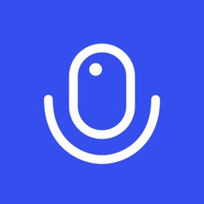
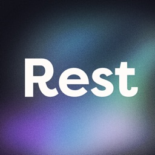

QA-EVOLVE

- Client
- Evolve Global, Inc.
- HQ
- San Francisco, USA
- Role
- Manual QA Specialist
- Period
- May 2021 – Present
- Type
- Long-term engagement
- Platform
- iOS, Android
- Cadence
- Weekly sprint releases
Sprint-end regression and exploratory testing for Podcast App, one of the largest independent podcast players, and Rest, an AI sleep coach. Both are built by Y Combinator company Evolve Global.

Achievements
Release Confidence
Sprint-end regression runs on iOS and Android, so each weekly release ships with its core flows verified.
Core of the QA Process
That is how the Podcast App team describes the role after years of working together.
Bug Reporting
Clear, reproducible bug reports, with monitoring and follow-through until each fix is verified.
Test Assets
Regression test cases developed and kept current as both apps evolved.
Product Range
Coverage across a media player with a huge library and a health app with AI coaching.
Client Feedback
I am pleased to share my evaluation of Bayu’s work as a freelance Quality Assurance (QA) Tester over the past two years.
Bayu has consistently proven its dedication to ensuring the highest quality of our digital products, demonstrating an exceptional ability to detect, analyze, and report technical issues on time.
Their attention to detail is excellent. Bayu consistently exhibits a meticulous approach to his tasks, ensuring no issue is overlooked. Bayu has consistently detected bugs that have allowed our development team to improve our apps, enhancing overall user experience significantly.
Moreover, their ability to write detailed, clear, and informative bug reports has proven to be an invaluable asset. He comprehensively explains issues, making it easier for the development team to understand and rectify problems.
Bayu’s adaptability and versatility in various testing devices and methodologies have been impressive.
Communication is another area where Bayu excels. He communicates with us promptly and effectively with both the management and the development team, ensuring that everyone is kept informed about any reported issues.
In conclusion, Bayu is a reliable, detail-oriented, highly skilled QA tester who contributes significantly to our quality assurance efforts. He has proven to be an asset to our team, and I am confident in their ability to continue making valuable contributions.
I look forward to another productive period with Bayu on board.
Bayu is great. He's become a central part of our QA process, and we're super happy with our work with him.
How We Worked
Cadence
Testing follows the sprint, with regression at the end of each sprint before the build goes to the stores.
Defects
Each bug is reported with the detail the team needs to fix it, then monitored until the fix is verified.
Test cases
Regression cases are developed and maintained as features change in both apps.
Apps I Test
Since 2017
One of the largest independent podcast players, with tens of millions of downloads and an Apple "App of the Day" feature.

The Client
Evolve Global was founded in 2017 and went through Y Combinator's Winter 2018 batch. The San Francisco company, led by founder and CEO Martin Siniawski, builds consumer apps that millions of people use.
Its investors include Y Combinator, Reach Capital, FJ Labs, FLOODGATE and FundersClub.
Podcast App launches on the App Store.
Y Combinator Winter 2018 batch.
Joined as QA. Weekly sprint regression begins.
Rest launches on the App Store.
App of the Day feature for Podcast App on the App Store.
Contact